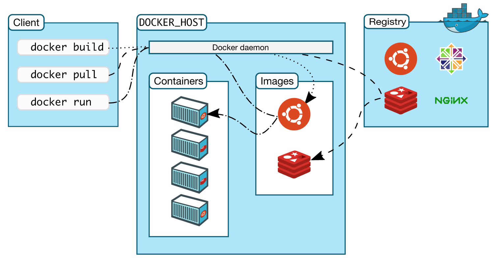
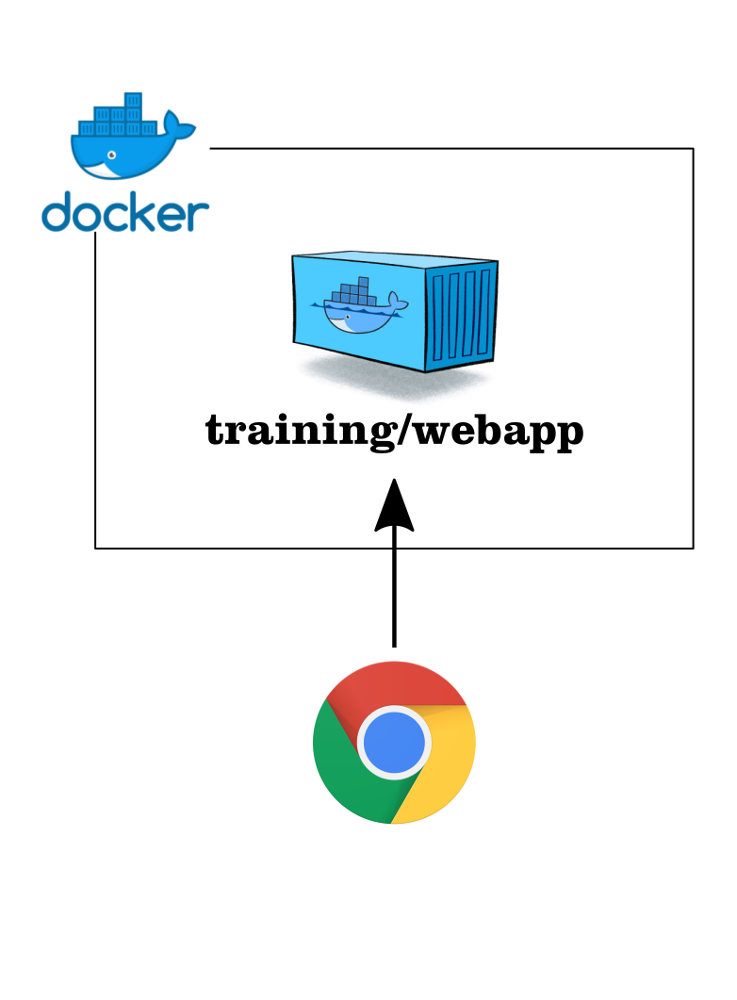
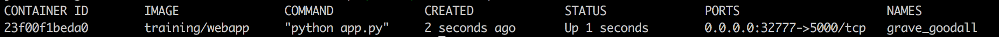
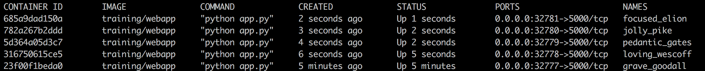
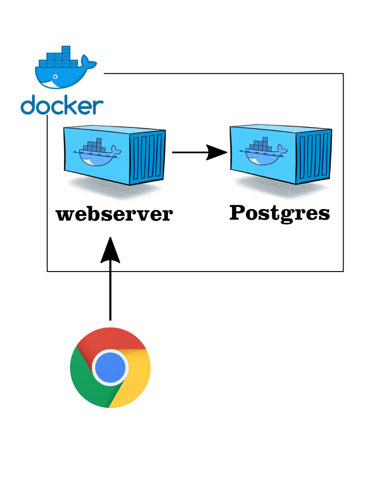
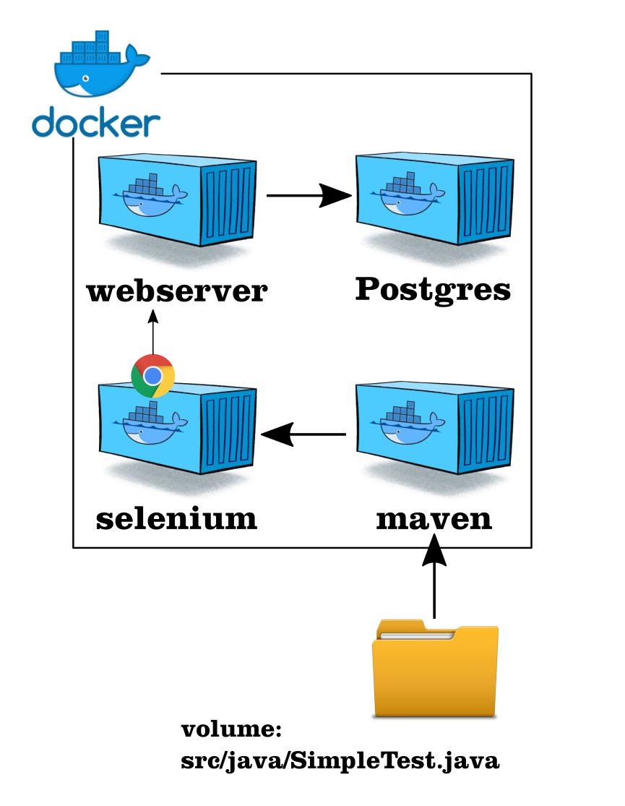

Docker for testers
Docker is both an enormously powerful and popular tool, which is quickly being adopted by development and operations. However, it is also highly usable for testers, enabling isolation, independence and shorter feedback loops.
In this workshops you will become familiar with the basic concepts of Docker and how you can use Docker to create isolated test environments.
The workshop revolves around several assignments concerning a webserver running in a Docker container, which we will extend with data from a dockerized database and against which we will run Selenium tests using public Docker images for a Selenium grid.
| The purpose of this workshop is to learn how to use Docker on your local machine. Afterwards, it is up to you to explore the rest of the Docker ecosystem! We’ve gathered some of the best resources in the Want more? section to get you started. |
1. Topics
After finishing the workshop you will know how to:
-
Start and stop containers
-
Build your own images
-
Run your own test database with test data
-
Run your own Selenium Grid for web testing
2. Structure
The workshop is structured as follows: a little theory, followed by practice, with every next assignment building on the previous.
There is enough information in this document to finish the assignments, but we encourage you to have a look at the links in the assignment. Exploring and experimenting outside of the examples is a great way to create a better understanding for yourself.
The goal of the workshop is not to finish all the assignments, but to learn as much as possible. The assignments will stay available online, to be finished whenever you like.
2.1. Layout
We use the following layout cues to indicate different types of information.
A command you should run in your terminal or code to copy and paste
| An invitation to explore |
| Optional information to help you with the assignments |
3. Installation instructions
In order to do this workshop you need to install Docker Desktop on your machine.
3.1. Mac
Please install Docker Community Edition for Mac. You can find the download in the Docker store.
3.2. Windows
Choose the correct Docker installation based on your Windows version.
-
Windows 8 or earlier, Windows 10 Home edition
-
Install Docker Toolbox from the Docker website.
-
-
Windows 10 Professional or Enterprise 64-bit
-
Install Docker Community Edition for Windows from the Docker store.
-
3.3. Verify the installation
After the installation is complete, continue with the first exercise to verify that your setup is running correctly.
|
Hardware Virtualization disabled If you encounter the message "VT-x/AMD-v has to be enabled", please enable "Intel Virtualization" in the BIOS of your system. This is required for running virtual machines. Detailed instructions can be found here under "Access the BIOS or UEFI Firmware". |
4. Reference material
4.1. Presentation
You can find the slides of the presentation on Google Drive.
4.2. Download the zip (optional)
If you like, you can download all the assignments for offline viewing.
Exercises
5. Hello World!
Let’s get started!
We will begin with verifying that your Docker setup is correct and that you can issue commands.
docker run hello-world
| On Windows you might have to start the Docker Quickstart terminal. |
This should show you a Hello from Docker! message and additional details on what happened under the hood.
|
Breaking down the command
Let’s have a closer look at what the command we’ve just run actually means.
|
5.1. Client, daemon and registry

The client is responsible for relaying the commands we give on the command line to the Docker daemon, which is running on the Docker host. Client and daemon are not necessarily running on the same machine. The daemon does all the heavy lifting: building images, starting containers or retrieving images from the internet such as the Docker Hub.
6. Running Docker containers
This assignment focuses on the Docker commands necessary to start, stop and inspect containers. We will use a Docker image published on the Docker Hub to start a small web server that serves a single "Hello World!"-page. 
docker run -d -P training/webapp python app.py
This runs the training/webapp-image in detached (-d) mode, exposing all ports (-P), calling python inside the container with one argument app.py, which is a script inside the container.
The last command will have started a new container, which runs a webserver on port 5000. However, if you go to http://localhost:5000, you will notice that the site will not load. This is because the container port 5000 isn’t mapped to port 5000 on your host machine. The -P flag will have mapped a random port on your machine to the 5000 port of the container.
docker ps --latest

Go to http://localhost:32769 (replace the port with the port number left of the -> in the docker ps command output) NOTE: If you are using Docker Toolbox, you can't use localhost, but have to use the IP of your Docker virtual machine. Run `docker-machine ls` to find out the name of your Docker Machine. Run `docker-machine ip <machine name>` to find the IP. Then go to http://<ip>:<port>.
The site should say Hello world!.
6.1. Inspecting the logs
After you’ve seen the Hello world-message you might want to inspect the logs of the docker container with the logs command.
docker logs <container id or name>
You should see GET commands on the root (/) of your webserver.
6.2. Configuring containers through environment variables
When using containers you’ll want to use the same version of the container across all environments. This maximizes portability and predictability. But, a container running on a test environment should probably use different resources and dependencies than a container running on production.
Environment variables are an excellent way to inject this configuration. Most containers are configurable using environment variables that you can pass in at startup with the -e flag.
We’ll use the container’s PROVIDER environment variable to pass in your name so it will be shown when you visit the website.
docker run -d -P -e PROVIDER="Your name" training/webapp python app.py
Find out the port for this new container using the command below and visit it again to see your name displayed.
docker port <container id returned by previous docker run command> 5000
6.3. Run more containers
docker psdocker run -d -P training/webapp python app.py docker ps
Notice that every container has a different port assigned on the host, but all map to 5000 port on the container. This is handled by the -P parameter.
-P, --publish-all Publish all exposed ports to random ports
Of course, at times you may want to have more control over the ports you are running on.
Figure out how to start another training/webapp container mapping a specific port (80) to the exposed port of the container (5000).
Afterwards you should be able to see the Hello-message on http://localhost:80.
| If you get stuck mapping the 5000 port of the container to port 80 of the host, start by checking the documentation of the run command (look at the EXPOSE section). |
7. Managing containers
After the first two exercises we have a number of containers running, which we will probably want to stop at some point in time. Let’s practice that now.
7.1. Stopping containers
First we have to figure out which containers are currently running with docker ps.
docker ps

You can stop a single container by running docker stop followed by the container id or name.
docker stop a557431a5588
You can also specify and stop multiple containers.
docker stop a557431a5588 clever_fermi
Of course, you might also want to stop all containers at once. To do so, we’d have to pass all the container ids we want to stop to the stop command. We can achieve this by combining two commands.
docker ps -q
By combining the output of the ps command with the stop commands we can easily stop all containers with one statement.
docker stop $(docker ps -q)
FOR /f "tokens=*" %i IN ('docker ps -q') DO docker stop %i
If you now run docker ps the list of containers should be empty.
7.2. Removing containers
Now that we’ve stopped all the containers we can also remove them. Let’s see how many stopped containers we have on our system by running docker ps -a.
docker ps -a
You can remove a container by running docker rm followed by its container id or name.
docker rm big_newton
Of course, in this case we’d rather remove all containers at once
docker rm $(docker ps -a -q)
FOR /f "tokens=*" %i IN ('docker ps -a -q') DO docker rm %i
If you now list all stopped containers again, docker ps -a, no containers should be returned.This does not mean that the images are no longer available, as you can see by running docker images. We’ve only removed the containers which are, in essence, instances of the images available on your system.
8. Building images
Running pre-made images is very useful and can save you a lot of time, but at some point you will want to create your own images.
The training/webapp image is limited in that it can only say "Hello World" or "Hello Your Name", let’s see if we can expand on the original image to display a value stored in a Postgres database.
8.1. What do we need to change?

In order to add the ability to connect to a database we have to change a number of things:
-
Expand the original image
-
Install Python dependencies in the container to enable connections to a Postgres database
-
Replace the original Python application with our new version that uses the database
-
-
Setup a docker network so that the
webservercan get its data from thedatabasecontainer -
Run a database with data
-
Run a Postgres database image
-
Add our data to the running database
-
-
Run the newly built image
-
Display the data from the database on the webpage
-
The following sections will discuss all these steps one-by-one.
8.2. Understanding the Dockerfile used to build the image
In order to build a Docker image yourself you need a Dockerfile. In this case we will supply you with the Dockerfile necessary to create the image. But you will have to run the build process yourself to make the image available to your Docker daemon.
-
Download the workshop zip file and unzip it on your local harddisk
-
Look at the Dockerfile in the
docker-images/webserverfolder.FROM training/webapp [a] ENV DEBIAN_FRONTEND=noninteractive [b] RUN apt-get -y update && apt-get -y install libpq-dev python-dev [c] RUN pip install pygresql [c] ADD app.py /opt/webapp/app.py [d]
Each line in the Dockerfile is explained below:
-
We use the
training/webappimage as a base-image -
We set the DEBIAN_FRONTEND environment variable to make sure that the next command runs in noninteractive mode
-
We run 2 commands inside the container to install python and pygresql (a library that lets python code talk to PostgreSQL)
-
We overwrite the existing
app.pyfile with our newapp.pyfile that will check the database.
8.3. Building the new image
We now have to instruct Docker to use the Dockerfile and build it. Additionally, we assign the tag webserver to the new image.
Make sure your working directory is docker-images/
|
docker build -t webserver webserver/
Read the documentation of the build command: docker build --help
|
The command should exit output similar to:
Successfull Successfully tagged webserver:latest
8.4. Setup a docker network
If we want docker containers to be able to reach each other, we need to setup a docker container network. A Docker network automatically allows Docker containers to reach each other by container name, as long as they are part of the same network. This works via the DNS server on the Docker daemon. To create a docker network called "training" we need to run the following command:
docker network create training
8.5. Starting the new image
Before we start a container with the webserver image we first need to start a Postgres database that will store our data for us.
Luckily, we can use an off-the-shelf image provided by Postgres.
docker run --rm --network training --name database -e POSTGRES_PASSWORD=eurostar -d postgres
8.6. Add data to the database
Before we can get data from the database, we first need to put the data in of course. For that, we need a database client to connect to the Postgres database. Luckily, the Postgres image also contains a client! We can start another container from the Postgres image, but instead of the database, we’ll start the client. From there we can connect to the previously started database container so we can add some data to the database to display on the webpage.
docker run -it --rm --network training postgres psql -h database -U postgres
This starts a new instance of the postgres image in interactive mode (-it), removes it after stopping the container (--rm), makes it part of the training-network and executes psql -h database -U postgres inside the container in order to connect to the running database container.
CREATE DATABASE eurostar;
\c eurostar
CREATE TABLE kv (key varchar(100) PRIMARY KEY, value varchar(100));
INSERT INTO kv VALUES ('provider','Now getting data from Postgres!');
SELECT * FROM kv; -- Check that the data is really there
\q
8.7. Run the newly built webserver image
docker run -it --rm --network training --name webserver -p 5000:5000 webserver
In foreground mode (the default when -d is not specified), docker run can start the process in the container and attach the console to the process’s standard input, output, and standard error. It can even pretend to be a TTY (this is what most command line executables expect) and pass along signals.
For interactive processes (like a shell), you must use -i -t together in order to allocate a tty for the container process. -i -t is often written -it.
|
|
Error on Windows:
On Windows/GIT Bash/Cygwin you may get the following error the input device is not a TTY.the input device is not a TTY. If you are using mintty, try prefixing the command with 'winpty'.
Run the command again with winpty in front of it. Refer to this page for details.
|
9. Running your database with data included
Having to insert the data every time you start a container can become a hassle. In this exercise we will create our own version of the Postgres image and bake our data into it. That way the data will always be available on startup.
The Postgres image provides a convenient way to execute scripts on startup of your database. All we have to do is add a .sh script to the docker-entrypoint-initdb.d-folder. Follow the steps below for detailed instructions.
| If you still have containers running, please stop them now. |
9.1. Build & run the image
Follow the steps below to create your own version of the Postgres image, including the files necessary to create the data we will access from the webserver.
-
Create an empty folder
-
Save the shell script below in that folder as
create.sh
-
#!/bin/bash
set -e
psql -v ON_ERROR_STOP=1 --username "$POSTGRES_USER" <<-EOSQL
CREATE DATABASE eurostar;
\c eurostar
CREATE TABLE kv (key varchar(100) PRIMARY KEY, value varchar(100));
INSERT INTO kv VALUES ('provider','Now getting data from Postgres!');
EOSQL
-
Create a
Dockerfilein the folder that -
Build the image with the name
database -
Run the newly build image as part of the training network
-
Run a
webservercontainer and also make it part of the training network
You should see the message 'Now getting data from Postgres!' if you visit the web app.
| On Windows you may have to run dos2unix on your .sh file before you can build the image. This will fix the line-endings in the script and allow it to be executed by the database image. Alternatively you can open the .sh file in Notepad++ and change the line endings to UNIX style. |
10. Checking whether the webpage is displayed correctly
Now that we have our webserver and database we’ll want to run automated checks to verify that the correct text is being displayed.
To that end we are going to add two containers to our setup. One container running a Selenium Hub and one container executing our test.
10.1. Preparing the test environment

For the automated check to succeed we need to create the following situation:
-
The
databasecontainer is running and has data -
webserveris able to connect to thedatabase -
Selenium grid is running
-
The Java environment to execute the tests will be provided by a Docker container too
10.2. Starting the selenium server
Assuming you have the database and webserver containers running, start the Selenium server by executing:
docker run --rm --name selenium -d --network training -p 4444:4444 -p 5900:5900 selenium/standalone-firefox-debug
10.3. Connect with VNC
In order to monitor test progress we can connect with VNC viewer to the Selenium node after we’ve started it.
The VNC server is listening on port 5900, the password is secret.
10.4. Adjust SimpleTest
We’ve prepared a simple Java project to test whether the webserver displays the correct message.
Adjust the message you added to the database in the SimpleTest.java file. This file can be found inside the selenium-grid-docker directory.
10.5. Execute your test
We will use the official Maven image (maven:3.3.9-jdk-8-alpine) to build and execute our test.
This image provides a Java environment and Maven (a Java build tool) to execute the project. In order to make the project files, which are on your local machine, available to the container we will mount the selenium-grid-docker directory as a volume for the container.
docker run -it --rm --name my-maven-project --network training -v "$PWD":/usr/src/mymaven -w /usr/src/mymaven maven:3.3.9-jdk-8-alpine mvn clean install
Make sure that your command prompt is in the selenium-grid-docker directory.
|
10.5.1. Additional Windows/Docker toolbox details
On Windows/GIT Bash/Cygwin you may get the following error the input device is not a TTY. If you are using mintty, try prefixing the command with 'winpty'.
Run the command again with winpty in front of it. Refer to this page for details.
|
| Before we can mount a volume on Windows when using Docker Machine we need to make a shared folder in Virtual Box first. See step 3 of this page. |
10.6. Considerations
What are the implications of the `-v` flag in the command?
11. Additional assignments
The following assignments are extra. They give less information upfront and you’ll have to investigate a bit yourself.
11.1. Run a Selenium Hub with nodes for Firefox and Chrome
In the previous assignment we used a single Firefox container, but often you will want to test your application in multiple browsers. Figure out which containers you need and how to adjust the SimpleTest class to use the Chrome browser.
11.2. Docker Compose
Let’s see if we can do the previous assignment again, using Docker Compose. Create a YAML file that describes the necessary containers and bring them online with the docker-compose command.
Compose is a tool for defining and running multi-container Docker applications. With Compose, you use a YAML file to configure your application’s services. Then, with a single command, you create and start all the services from your configuration.
12. Appendix
12.1. Dealing with named containers
You can start named containers by adding --name your_name to any docker run command. If you try to start a new instance of a container with that same name you will get an error message.
docker: Error response from daemon: Conflict. The name "/pg" is already in use by container. You have to remove (or rename) that container to be able to reuse that name..
This is easily resolved by running
docker rm -f <container_name>
or add the --rm flag when starting the container, which will delete the container as soon as it stops.
12.2. Want more?
We can imagine this workshop has left you wanting for more. Whether you want to read some more, or do more practical assignments, we’ve got you covered. Check out the links below.
12.2.1. Topics to explore
-
Using Docker containers together with your build tool to create an environment during the build
-
Take a tour of the underlying technology Docker uses to provide isolation.
-
Explore the rest of the Docker ecosystem, how to run Docker containers in the cloud etc.
12.2.2. Links
| Link | Description |
|---|---|
Labs and tutorials on a wide breadth of topics. |
|
Practice with Docker commands right from your browser. No need to install anything. |
|
Practice with Docker commands right from your browser. No need to install anything. |
|
A nice basics tutorial by Prakhar Srivastav from Google |
|
Another basic tutorial with a lot of screenshots |
|
Collection of even more awesome Docker resources |
|
Learn more about applying Docker in development, devops, testing, product management etc. |
|
Integrate Docker with your build tool using the Docker Maven plugin |
|
Integrate Docker with your build tool with the Gradle plugin |
|
E-books on automation, monitoring, security, network & storage of Docker containers |
|
Paid course with tons of content (no affiliation) |
12.3. Feel free to share and improve
This material is free and will stay available at this url: http://bolcom.github.io/docker-for-testers/.
Feel free to share it with anyone that might benefit.
We also welcome feedback of any kind, please create an issue or pull request through GitHub.